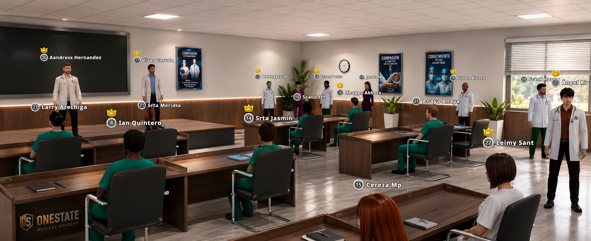

🖼️
Flyer del ascenso
Tocá para verlo en grande.
Misma pasión · Mayor responsabilidad
Toda evidencia deberá presentarse en SCREENSHOT o VIDEO, en fechas y horas del servidor.
Importante: el cumplimiento de los requisitos es obligatorio y el proceso debe realizarse en el orden indicado. El incumplimiento puede afectar tu ascenso.
Estos ascensos son un punto de calificación en caso de poca participación en las actividades, por lo que servirán para mantener el cargo.

Evidencia: screenshot del foro.

Con iniciales o tutoriales. Evidencia: 2 screenshots del foro.

Participación en eventos o prácticas de la alianza. Evidencia: video o screenshot.

En proceso de capacitación RCP. Evidencia: screenshot o video.
Tocá para verlo en grande.
Presentar la confirmación de un jefe adjunto.
Presentar evidencia de 2 reuniones realizadas con iniciales o tutoriales.
Participar como mínimo en 2 eventos o prácticas de la alianza.
Supervisar a 2 batas azules en su proceso de capacitación RCP.